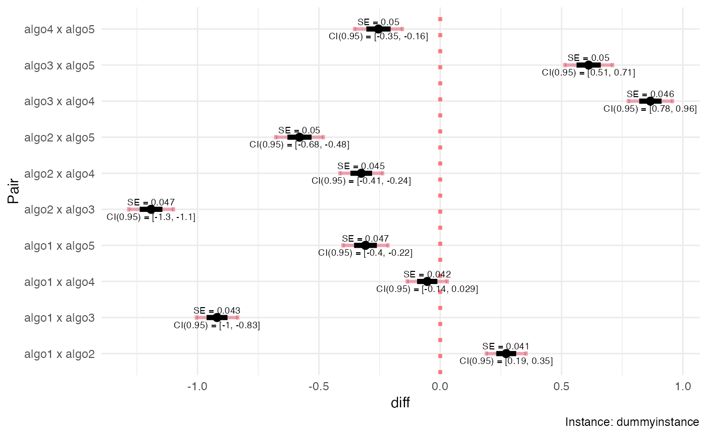

R/calc_nreps.R
calc_nreps.RdIteratively calculates the required sample sizes for K algorithms on a given problem instance, so that the standard errors of the estimates of the pairwise differences in performance is controlled at a predefined level.
calc_nreps(
instance,
algorithms,
se.max,
dif = "simple",
comparisons = "all.vs.all",
method = "param",
nstart = 20,
nmax = 1000,
seed = NULL,
boot.R = 499,
ncpus = 1,
force.balanced = FALSE,
load.folder = NA,
save.folder = NA
)a list object containing the definitions of the problem
instance.
See Section Instance for details.
a list object containing the definitions of all algorithms.
See Section Algorithms for details.
desired upper limit for the standard error of the estimated
difference between pairs of algorithms. See Section
Pairwise Differences for details.
type of difference to be used. Accepts "perc" (for percent differences) or "simple" (for simple differences)
type of comparisons being performed. Accepts "all.vs.first"
(in which cases the first object in algorithms is considered to be
the reference algorithm) or "all.vs.all" (if there is no reference
and all pairwise comparisons are desired).
method to use for estimating the standard errors. Accepts "param" (for parametric) or "boot" (for bootstrap)
initial number of algorithm runs for each algorithm.
See Section Initial Number of Observations for details.
maximum total allowed number of runs to execute. Loaded
results (see load.folder below) do not count towards this
total.
seed for the random number generator
number of bootstrap resamples to use (if method == "boot")
number of cores to use
logical flag to force the use of balanced sampling for the algorithms on each instance
name of folder to load results from. Use either "" or
"./" for the current working directory. Accepts relative paths.
Use NA for not saving. calc_nreps() will look for a .RDS file
with the same name
name of folder to save the results. Use either "" or
"./" for the current working directory. Accepts relative paths.
Use NA for not saving.
a list object containing the following items:
instance - alias for the problem instance considered
Xk - list of observed performance values for all algorithms
Nk - vector of sample sizes generated for each algorithm
Diffk - data frame with point estimates, standard errors and
other information for all algorithm pairs of interest
seed - seed used for the PRNG
dif - type of difference used
method - method used ("param" / "boot")
comparisons - type of pairings ("all.vs.all" / "all.vs.first")
Parameter instance must be a named list containing all relevant parameters
that define the problem instance. This list must contain at least the field
instance$FUN, with the name of the function implementing the problem
instance, that is, a routine that calculates y = f(x). If the instance
requires additional parameters, these must also be provided as named fields.
Object algorithms is a list in which each component is a named
list containing all relevant parameters that define an algorithm to be
applied for solving the problem instance. In what follows algorithm[[k]]
refers to any algorithm specified in the algorithms list.
algorithm[[k]] must contain an algorithm[[k]]$FUN field, which is a
character object with the name of the function that calls the algorithm; as
well as any other elements/parameters that algorithm[[k]]$FUN requires
(e.g., stop criteria, operator names and parameters, etc.).
The function defined by the routine algorithm[[k]]$FUN must have the
following structure: supposing that the list in algorithm[[k]] has
fields algorithm[[k]]$FUN = "myalgo", algorithm[[k]]$par1 = "a" and
algorithm$par2 = 5, then:
myalgo <- function(par1, par2, instance, ...){
# do stuff
# ...
return(results)
}
That is, it must be able to run if called as:
# remove '$FUN' and '$alias' fields from list of arguments
# and include the problem definition as field 'instance'
myargs <- algorithm[names(algorithm) != "FUN"]
myargs <- myargs[names(myargs) != "alias"]
myargs$instance <- instance
# call function
do.call(algorithm$FUN,
args = myargs)
The algorithm$FUN routine must return a list containing (at
least) the performance value of the final solution obtained, in a field named
value (e.g., result$value) after a given run.
In the general case the initial number of observations per algorithm
(nstart) should be relatively high. For the parametric case
we recommend between 10 and 20 if outliers are not expected, or between 30
and 50 if that assumption cannot be made. For the bootstrap approach we
recommend using at least 20. However, if some distributional assumptions can
be made - particularly low skewness of the population of algorithm results on
the test instances), then nstart can in principle be as small as 5 (if the
output of the algorithms were known to be normal, it could be 1).
In general, higher sample sizes are the price to pay for abandoning
distributional assumptions. Use lower values of nstart with caution.
Parameter dif informs the type of difference in performance to be used
for the estimation (\(\mu_a\) and \(\mu_b\) represent the mean
performance of any two algorithms on the test instance, and \(mu\)
represents the grand mean of all algorithms given in algorithms):
If dif == "perc" and comparisons == "all.vs.first", the estimated quantity is
\(\phi_{1b} = (\mu_1 - \mu_b) / \mu_1 = 1 - (\mu_b / \mu_1)\).
If dif == "perc" and comparisons == "all.vs.all", the estimated quantity is
\(\phi_{ab} = (\mu_a - \mu_b) / \mu\).
If dif == "simple" it estimates \(\mu_a - \mu_b\).
F. Campelo, F. Takahashi: Sample size estimation for power and accuracy in the experimental comparison of algorithms. Journal of Heuristics 25(2):305-338, 2019.
P. Mathews. Sample size calculations: Practical methods for engineers and scientists. Mathews Malnar and Bailey, 2010.
A.C. Davison, D.V. Hinkley: Bootstrap methods and their application. Cambridge University Press (1997)
E.C. Fieller: Some problems in interval estimation. Journal of the Royal Statistical Society. Series B (Methodological) 16(2), 175–185 (1954)
V. Franz: Ratios: A short guide to confidence limits and proper use (2007). https://arxiv.org/pdf/0710.2024v1.pdf
D.C. Montgomery, C.G. Runger: Applied Statistics and Probability for Engineers, 6th ed. Wiley (2013)
# Example using dummy algorithms and instances. See ?dummyalgo for details.
# We generate dummy algorithms with true means 15, 10, 30, 15, 20; and true
# standard deviations 2, 4, 6, 8, 10.
algorithms <- mapply(FUN = function(i, m, s){
list(FUN = "dummyalgo",
alias = paste0("algo", i),
distribution.fun = "rnorm",
distribution.pars = list(mean = m, sd = s))},
i = c(alg1 = 1, alg2 = 2, alg3 = 3, alg4 = 4, alg5 = 5),
m = c(15, 10, 30, 15, 20),
s = c(2, 4, 6, 8, 10),
SIMPLIFY = FALSE)
# Make a dummy instance with a centered (zero-mean) exponential distribution:
instance = list(FUN = "dummyinstance", distr = "rexp", rate = 5, bias = -1/5)
# Explicitate all other parameters (just this one time:
# most have reasonable default values)
myreps <- calc_nreps(instance = instance,
algorithms = algorithms,
se.max = 0.05, # desired (max) standard error
dif = "perc", # type of difference
comparisons = "all.vs.all", # differences to consider
method = "param", # method ("param", "boot")
nstart = 15, # initial number of samples
nmax = 1000, # maximum allowed sample size
seed = 1234, # seed for PRNG
boot.R = 499, # number of bootstrap resamples (unused)
ncpus = 1, # number of cores to use
force.balanced = FALSE, # force balanced sampling?
load.folder = NA, # file to load results from
save.folder = NA) # folder to save results
#>
#> Sampling algorithms on instance dummyinstance : .....................................
summary(myreps)
#> #====================================
#> Instance: dummyinstance
#> Number of algorithms: 5
#> algo1: 15 runs
#> algo2: 61 runs
#> algo3: 138 runs
#> algo4: 165 runs
#> algo5: 237 runs
#> --------------------
#> Total runs: 616
#> Comparisons: all.vs.all
#> #====================================
#>
#> Alg1 Alg2 N1 N2 Phi SE r ropt
#> 1 1 2 15 61 0.2720 0.0411 0.2460 0.435
#> 2 1 3 15 138 -0.9200 0.0431 0.1090 0.288
#> 3 1 4 15 165 -0.0535 0.0418 0.0909 0.254
#> 4 1 5 15 237 -0.3080 0.0470 0.0633 0.177
#> 5 2 3 61 138 -1.1900 0.0468 0.4420 0.662
#> 6 2 4 61 165 -0.3250 0.0446 0.3700 0.585
#> 7 2 5 61 237 -0.5800 0.0498 0.2570 0.408
#> 8 3 4 138 165 0.8660 0.0462 0.8360 0.883
#> 9 3 5 138 237 0.6120 0.0499 0.5820 0.617
#> 10 4 5 165 237 -0.2540 0.0500 0.6960 0.698
#>
#> #====================================
plot(myreps)
